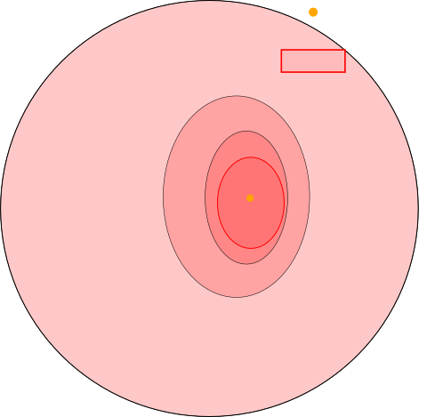
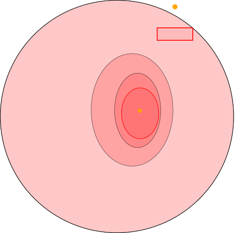

Robust-Adaptive Control
of Linear Systems:
beyond Quadratic Costs
Motivation
Most RL algorithms rely on trial and error
- Random exploration
- Optimism in the face of uncertainty
None are suitable for a safety-critical application
- Pessimism in the face of uncertainty
- Learn from observations to improve performance
Setting
Linear dynamics with structured uncertainty $$ \begin{aligned} \dot{{x}}(t) = \color{orange}{A(\theta)}x(t) + Bu(t) + \omega(t),\\ \text{where }\color{orange}{A(\theta)} = A + \sum_{i=1}^d\color{orange}{\theta_i}\phi_i, \end{aligned} $$ $A,\phi$ are known, and the disturbance $\omega(t)$ is bounded.
Robust control framework
- Build a confidence region for the dynamics \[\mathbb{P}\left[\color{orange}{\theta}\in\color{crimson}{\mathcal{C}_{N,\delta}}\right]\geq 1-\delta\]
- Plan robustly against the worst case outcome $\color{crimson}{V^r}$ \[\color{limegreen}{\sup_{u}} \underbrace{\color{crimson}{\inf_{\substack{\theta \in \mathcal{C}_{N,\delta}\\ \omega\in[\underline\omega,\overline\omega]}}} \expectedvalue \left[\sum_{n=0}^\infty \gamma^n R(x(t_n)) \middle| \color{limegreen}{u}, \color{crimson}{{\theta}}, \color{crimson}{\omega}\right]}_{\color{crimson}{V^r(u)}}\]
Related work
- Robust Dynamic Programming ⮕ finite $\mathcal{S}$
- Quadratic costs (LQ) ⮕ stabilization only
We only require the rewards $R$ to be bounded.
Algorithm
1. Model Estimation
Confidence ellipsoid $\color{crimson}{\cC_{N,\delta}}$ from
(Abbasi-Yadkori et al., 2011)
\[\small \mathbb{P}\left[\|\color{orange}{\theta}-\color{crimson}{\theta_{N}}\|_{\color{crimson}{G_{N}}} \leq \color{crimson}{\beta_N(\delta)}\right]\geq 1-\delta\]


 

2. Interval Prediction
Propagate uncertainty $\color{crimson}{\theta\in\cC_{N,\delta}}$ through time and bound the reachable states
(Leurent et al., 2019)
\[\color{lightskyblue}{\underline x(t)} \leq x(t) \leq \color{lightskyblue}{\overline x(t)}\]


3. Pessimistic planning
Use the predicted intervals in a surrogate pessimistic objective \[\small \color{orange}{\hat{V}^r(u)} = \sum_{n=N+1}^\infty \gamma^n \color{orange}{\min_{\color{lightskyblue}{\underline{x}(t_n)}\leq x \leq\color{lightskyblue}{\overline{x}(t_n)}} R(x)} \]

Results
Theorem (Lower bound) \[ \small \color{orange}{\underbrace{\hat{V}^r(u)}_{\substack{\text{surrogate}\\\text{value}}}} \leq \color{crimson}{\underbrace{{V}^r(u)}_{\substack{\text{robust}\\\text{value}}}} \leq \color{limegreen}{\underbrace{{V}(u)}_{\substack{\text{true}\\\text{performance}}}} \]
Bounded suboptimality
Theorem Under two conditions:
- Lipschitz reward $R$;
- Stability condition: there exist $P>0,\,Q_0,\,\rho,\,N_0$ such that \[\forall \color{orange}{N}>N_0,\quad\begin{bmatrix} \color{orange}{A({\theta}_{N})}^\top P + P \color{orange}{A({\theta}_{N})} + Q_0 & P|D| \\ |D|^\top P & -\rho I_r \\ \end{bmatrix}< 0;\]
with probability $1-\delta$, \[ \underbrace{V(a_\star) - V(a_K)}_{\substack{\text{subptimality}}} \leq \color{crimson}{\underbrace{\Delta_\omega}_{\substack{\text{robustness to}\\ \text{disturbances}}}} + \color{lightskyblue}{\underbrace{\mathcal{O}\left(\frac{\beta_N(\delta)^2}{\lambda_{\min}(G_{N,\lambda})}\right)}_{\text{estimation error}}} + \color{limegreen}{\underbrace{\mathcal{O}\left(K^{-\frac{\log 1/\gamma}{\log \kappa}}\right)}_{\text{planning error}}} \]
Asymptotic Near-optimality
Corollary Under an additional persistent excitation (PE) assumption: \[\exists \underline{\phi},\overline{\phi}>0: \forall n\geq n_0,\quad \underline{\phi}^2 \leq \lambda_{\min}(\Phi_{n}^\top\Sigma_{p}^{-1}\Phi_{n}) \leq \overline{\phi}^2,\] the stability condition 2. can be relaxed to its limit: $$\begin{bmatrix} \color{orange}{A(\theta)}^\top P + P \color{orange}{A(\theta)} + Q_0 & P|D| \\ |D|^\top P & -\rho I_r \\ \end{bmatrix}< 0;$$ and the bound takes the more explicit form
${V(a_\star)} - {V(a_K)} \leq \color{crimson}{\Delta_\omega} +$ $\color{lightskyblue}{{\mathcal{O}\left(\frac{\log\left(N^{d/2}/\delta\right)}{N}\right)}}$$ + $ $\color{limegreen}{{\mathcal{O}\left(K^{-\frac{\log 1/\gamma}{\log \kappa}}\right)}}$
Experiments
Obstacle avoidance
Obstacle avoidance
Results
| Performance | failures | min | avg $\pm$ std |
|---|---|---|---|
| Oracle | $0\%$ | $11.6$ | $14.2 \pm 1.3$ |
| Nominal | $4\%$ | $2.8$ | $13.8 \pm 2.0$ |
| DQN (trained) | $6\%$ | $1.7$ | $12.3 \pm 2.5$ |
| Robust | $0\%$ | $10.4$ | $13.0 \pm 1.5$ |
Multi-model extension
Use multiple models $\color{lightskyblue}{(A,\phi)}$, through
a robust selection mechanism
Driving
Driving
Results
| Performance | failures | min | avg $\pm$ std |
|---|---|---|---|
| Oracle | $0\%$ | $6.9$ | $7.4 \pm 0.5$ |
| Nominal 1 | $4\%$ | $5.2$ | $7.3 \pm 1.5$ |
| Nominal 2 | $33\%$ | $3.5$ | $6.4 \pm 0.3$ |
| DQN (trained) | $3\%$ | $5.4$ | $6.3 \pm 0.6$ |
| Robust | $0\%$ | $6.8$ | $7.1 \pm 0.3$ |
Thank You!
I am looking for a postdoctoral position.